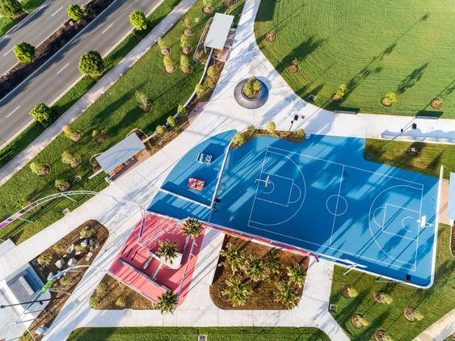

The Evolving Landscape of Esports
In recent years, esports has surged from a niche interest to a global phenomenon, reshaping our understanding of competition and athleticism. At its core, esports encompasses competitive video gaming across various titles, drawing in millions of spectators worldwide. What sets esports apart is its accessibility, offering a level playing field where anyone with a computer or gaming console can compete. Streaming platforms like Twitch and YouTube have further fueled its growth, creating vibrant communities around top players and teams.
Despite skepticism from traditionalists, esports demands significant skill, strategy, and mental acuity from its participants. Studies have shown that top esports athletes exhibit cognitive abilities on par with elite athletes in traditional sports, legitimizing esports as a form of competition. The industry's economic impact is undeniable, with lucrative sponsorship deals, advertising revenue, and multi-million dollar prize pools.
Looking ahead, esports stands as a thriving industry poised for continuous growth and innovation. Its trajectory is fueled by a convergence of technological advancements, shifting cultural attitudes, and a passionate global community, all contributing to its undeniable momentum. As technology continues to evolve, from improved graphics rendering to enhanced networking infrastructure, esports experiences become increasingly immersive and captivating, attracting a wider audience and driving engage.
Furthermore, the integration of esports into mainstream culture solidifies its position as a significant cultural force. What was once a niche subculture has blossomed into a global phenomenon, drawing audiences from diverse demographics and geographical locations. From large-scale arena events to online streaming platforms with millions of viewers, the reach of esports extends far beyond traditional entertainment mediums, transcending language and cultural barriers to unite fans worldwide.
For gamers, esports offers a platform to showcase their skills and compete at the highest levels, akin to traditional sports. Professional esports athletes, celebrated for their strategic prowess and lightning-fast reflexes, command admiration and inspire countless aspiring gamers. Casual viewers, too, find enjoyment and camaraderie in esports, fostering vibrant communities and shared experiences that enrich the overall gaming landscape.
Even skeptics cannot deny the cultural significance and impact of esports. Its emergence has led to the recognition of gaming as a legitimate career path, with opportunities ranging from professional player contracts to roles in game development, event management, and content creation. As esports scholarships and collegiate leagues gain traction, the societal perception of gaming shifts, paving the way for broader acceptance and acknowledgment of its value beyond mere entertainment.
In essence, as esports continues to redefine the sporting landscape, one thing remains certain: the game has only just begun. With each milestone and breakthrough, the industry charts a course toward a future teeming with potential and possibility. Whether as players, spectators, or stakeholders, we stand on the brink of a new era—one in which esports takes center stage as a global cultural phenomenon, uniting individuals in the shared pursuit of competition, community, and excellence.